Nikon Metaphot
One of 3 microscopes in Nikon's Microphot V series (pg 68),
along with Biophot and Fluophot,
that in introduced Nikon's CF system
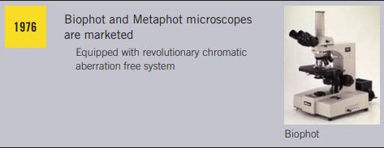
with the following characteristics:
- Lateral chromatic aberration is corrected properly all the way from field center to edge.
- Lack of color changes at eyepiece field stops allows 100% effective field viewing
(conventional systems have red tinges inside of stops).
- No appreciable color changes around eyepiece graticule markings.
- Reduced longitudinal chromatic aberration for objective and eyepiece lenses.
- Objective and eyepiece lenses are each their own complete optical system
and can be applied to any field.
Abbe compensation (deliberately introducing cancelling lateral chromatic aberration)
was adopted because alternatives were difficult,
particularly for high magnification objectives. To accomplish this,
objectives were divided into over-corrected front and inversely corrected rear lens groups.
Page 3 of Nikon New CF LENSES clarifies that CF means "chromatic-aberation-free".
Differences among CF/CF N Plan Apochomat, CF/CF N Plan Achromat,
and other CF objectives are on pp 11-13.
Nikon's CF OBJECTIVES 210mm TUBE LENGTH catalog
describes those objections without addressing CF.
Biophot and Fluophot
Apparently use the same base as Metaphot, but different arms e.g. with removable objective turret.
A Biophot manual is here
Evidence of some evolution in design:
- metal focus knobs similar to Nikon S series, instead of Optiphot style.
- a Siedentopf with external trinocular tube brace
160mm vs 210mm tube length implementation is unobvious; arm and turret depths appear the same...
Nikon Metaphot Trinocular Microscope 10/20/40x + CFW10x Eyepieces
eBay item number: 185534491790
Condition: For parts or not working
Seller Notes:
In use and was removed from a research facility after company was acquired several years ago.
 Optics and mechanicals are in good condition.
Optics and mechanicals are in good condition.
Solid smooth operation.
Below + above illumination features.
|
 |
 |
 |
 |
 |
 |
 |
 |
 |
A slider in illumination path on another (BD) Metaphot:

...could be a wave plate,
supposing that the filter turret has a polarizer,
and the empty horizontal slot instead had an analyzer.

That focus motor seems familiar from other microscope images, but is probably from ITP, not Nikon.
MicrobeHunter.com: Nikon stage focus motor? seeking information
Focus motor is only 2-wire; not a stepper, probably DC; listed elsewhere as autofocus motor.

"The
Nikon S and Metaphot from 1960s to 1976 have Nylon gears with tension ring adjustments",
but seemingly shares
plastic fine focus gear with Optiphot, Labophot, Epiphot, Fluophot.
The focus gear can be purchased here:
https://www.microscope-maintenance.com/SpurGears.html
Metaphot DIC arm
differs substantially:

Biophot DIC discussion
FCR halogen replacement lamp: 100W 12V T3 GY6.35 base, 3K Lumens, 3200 K
$12.10 from BulbWorks
$5.84 Osram from Amazon
LED in illuminator (same as Fluophot and Biophot)
C thumbwheel between F and A on vertical illuminator may be for Field aperture centering.
received 23 Aug
- shown 210mm M plan objectives were switched to generic 160mm 10/20/40 objectives
despite Metaphots having 210mm tube length!
- vertical illuminator C thumbwheel was frozen
- trinocular slider is frozen
- (large) stage weirdly disassembled and missing a crossed roller bearing rail.
- lamp house diffuser lever was extremely stiff.
- condenser focus is frozen
- condenser carrier missing (not shown eBay images); here is a Biophot condenser:

That
condenser has a special anchor not valid for other Nikon models.
Fluophot/Biophot Phase Contrast Achromat 0.90 Condenser included a rack dovetail.
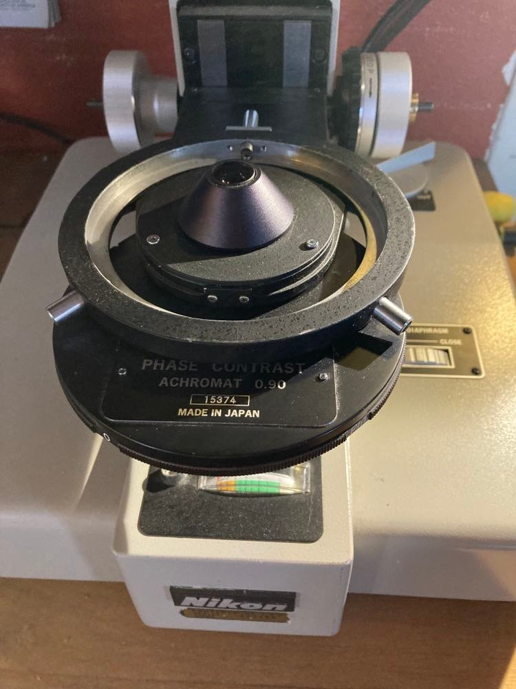
A Labophot condenser carrier is liable to be repurposed...
The base seems unmolested:

The only optics are mirror and field aperture; filter push-buttons have neither filters nor filter holders.
A 3A fuse is evidently combined with 100-120 V switch;
nearly all electronics, except for a variable resister, meter, lamp,
toroidal power transformer and power resister, are in a black plastic module.
That module probably uses an SCR triac
(instead of Optiphot's power transistor),
modulating AC rather than DC.
It might be replaceable by this AC dimmer/speed regulator:

review
HLX FCR lamp 12V 100W is supplied directly from a toroidal transformer winding via black wires;
Another secondary winding supplies the meter via blue wires,
and a power on indicator is wired across the primary winding.
The field lens provides for a 48mm o.d. polarizing filter.
A nominal 55mm camera filter has 57mm o.d.; a 46mm camera filter works here.
24 Aug
- Ordered:
- mechanical stage X-rack (for crossed roller bearing rails)
- GX16 2 pin aviation connector set (for illuminator power)
- GX16-3 3Pin Connector Plug Socket (for AC power)
- VIVITAR 46mm POLARIZING GLASS FILTER (for field lens)
- Osram Xenophot HLX 64625 100W 12V GY6.35 FCR bulbs (for lamp box)
31 Aug
Tack-soldered illuminator lamp cord to base lamp power contacts and tested; it works fine.
Output Voltage does not increase appreciably until the control thumbwheel is turned up about 1/3.
Labophot condenser carrier repurposed for Metaphot

Base of Metaphot stage carrier dovetail is about 111mm to field lens centerline
and 60mm to face of condenser carrier dovetail.
Labophot condenser fork center to vertical plate back is 48mm;
need about 3mm shim, e.g. 1/8 aluminum, to match 111mm..
FWIW, Optiphot is 111mm both at field lens and condenser lens centers.
That 1/8 aluminum spacer was drilled for Labophot condenser fork bracket's 4 holes
and Metaphot condenser focus rack dovetail's 2 holes.
While Nikon uses metric hardware, available 8-32 flat head screws are a good fit to Labophot condenser fork mounting holes.
Luckily, a long drill bit was available that fit those holes and cleared the fork.
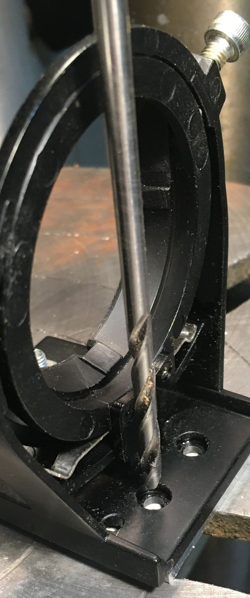
Since the long bit is dull,
drilling was completed using a shorter but sharper drill.
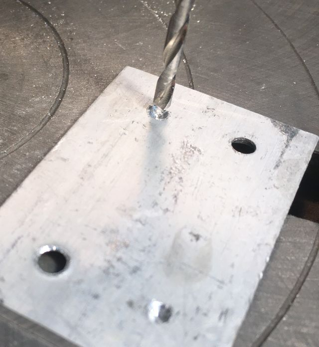 |
Sharp vision is not needed to note that
the aluminum spacer is NOT square on the mount.
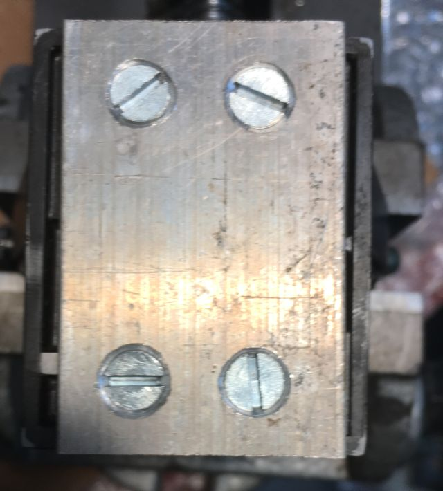 |
Many are fond of reciting "measure twice and cut once",
somehow forgetting that only a single final measurement determines accuracy.
In this case, all 4 screw holes accurately match condenser fork holes,
while overall accuracy was compromised by both drill chuck runout and drill bit wander.
Further, just as with e.g. Porsche twin turbo brake rotors that are far out of true from the factory,
overall fit is determined by another mating,
in Porsche's case with rotor hats and in this case by another pair of screw holes
mounting this spacer to Metaphot's condenser rack,
where parallel between the Labophot condenser bracket and Metaphot condenser dovetail
was checked before drilling the second of those holes:
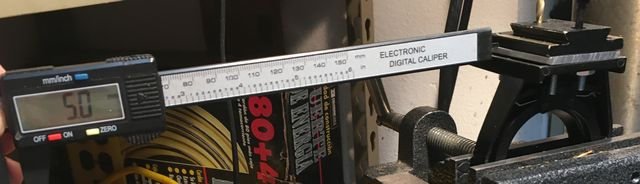
Clamping this aluminum spacer between condenser fork, dovetail and rack
wants a pair of 3mm flat heat screws no longer than 17mm; M3 x 16mm were ordered.
At its highest, top lens of Nikon LWD condenser would be about 14mm below stage top surface.
In the Optiphot with slide stage, that LWD condenser gets field aperture parfocal with calibration target about 12mm below stage surface.
As with Optiphot-66 getting parfocal using ELWD 0.3 condenser will be not problem,
with top surface of condenser carrier fork about 83mm below stage surface.
On the other hand, ELWD condenser lack of n.a. and aperture compromise objectives > 5x.
Nikon's condenser adapter adds 18mm height and retains condenser centering;
putting Labophot condenser fork vertical flange at Metaphot condenser dovetail height
when LWD 0.65 condenser top lens is flush with the oversized Metaphot stage top surface.
Of course, being LWD, it need not be that high to focus the field aperture,
but Abbe 1.25 and Achr 0.90 flip top condensers are also that (63-64mm) height.
9 Sept 2022
3x16 flat head screws arrived the same day as BD head;
both were assembled to the Metaphot.
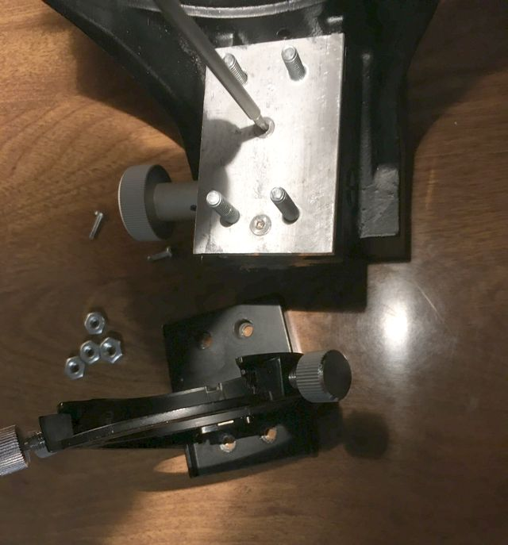
Nikon Microscope Substage Condenser Adapter 78604
eBay item number: 274658242428
Condition: New: A brand-new, unused, unopened, undamaged item
in its original packaging (where packaging is applicable).
Packaging should be the same as what is found in a retail store,
unless the item was packaged by the manufacturer in non-retail packaging,
such as an unprinted box or plastic bag.
Nikon sub-stage condenser adapter that will allow almost any condenser of another brand
with a lower opening of approximately 36.4 mm
to be fitted to the Nikon Labophot/ Optiphot/ Microphot/ Eclipse E400/ E600/ E800 and "CiL/ Ni series of microscopes.
This is very handy if for example you have an Olympus darkfield condenser
you would like to use on your Nikon, no problem!
Brand new in box with a Nikon stock number 78604.
A 34mm 1/4 lambda plate will fit between this adapter and Nikon condensers;
36mm is too large.
Photo/prizm slider is frozen, fortunately in photo position.
Metaphot objective to head flange is 73mm;
Optiphot-66 with vertical illuminator is 103mm
Optiphot with (17mm) DIC sliders and vertical illuminator is 118
Trinoc F head adds another 80mm to photo tube M42 flange.
Tc head less Nikon photo tube is about 110,
seemingly making up for Metaphot missing 30mm..
NIKON METAPHOT VERTICAL ILLUMINATOR BF/DF DIC
eBay item number: 204068370304
Condition: Used
Here for auction is a NIKON Metaphot Vertical Illuminator Assy
for Brightfield Darkfield and Interference contrast application.
The complete assy includes the 4 position objective nosepiece for Nikon BD PLAN objectives,
the slide polarizer, the complete filter turret and field diaphram control rings.
The unit is clean and clear and looks to be in good working condition with no obvious faults
but I have no way to fully test this one so it is selling as is.
|
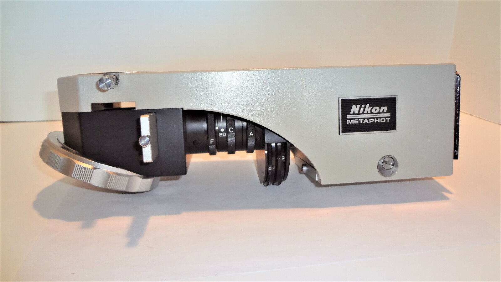 |
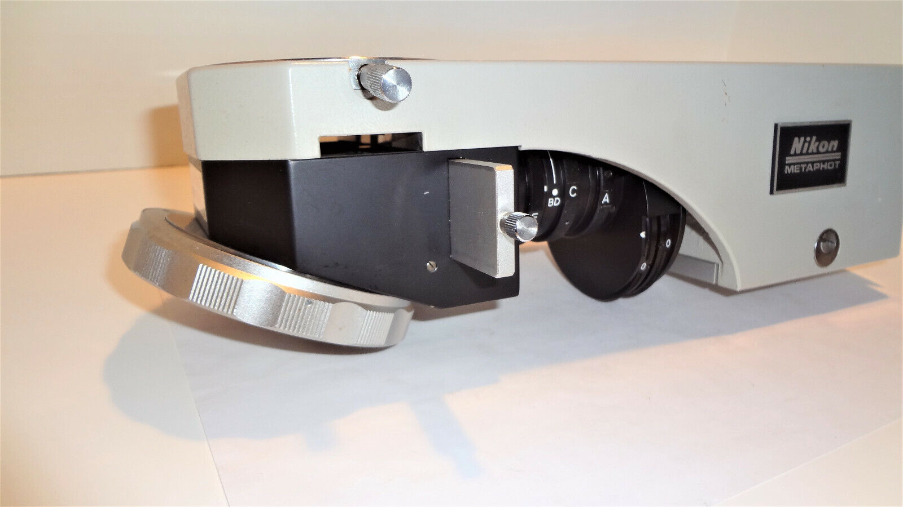 |
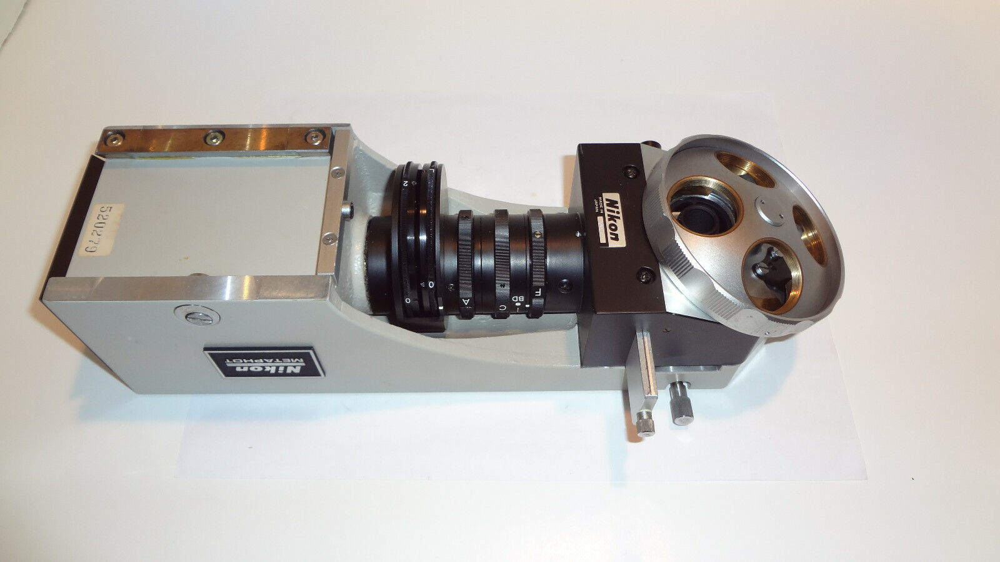 |
|
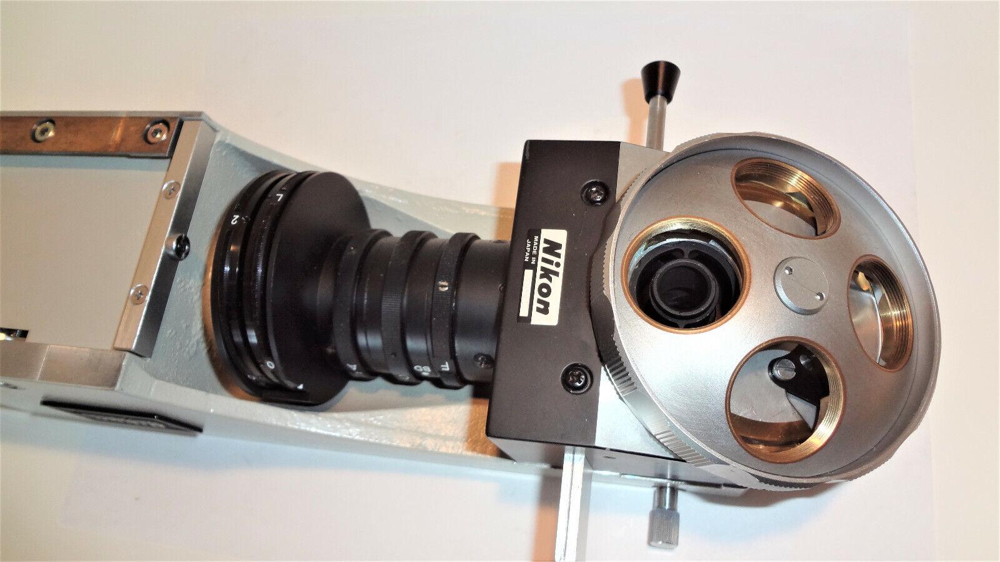 |
 |
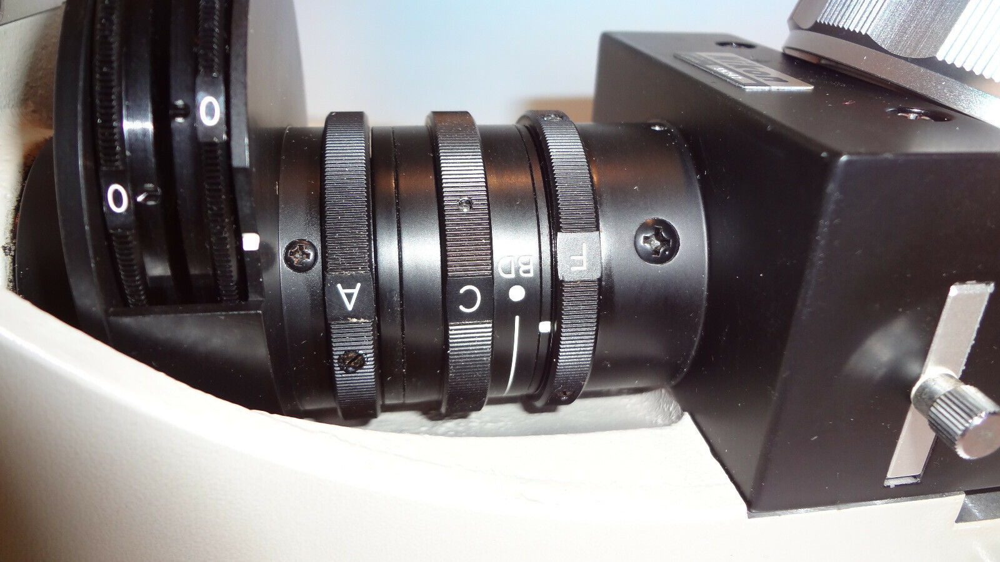 |
|
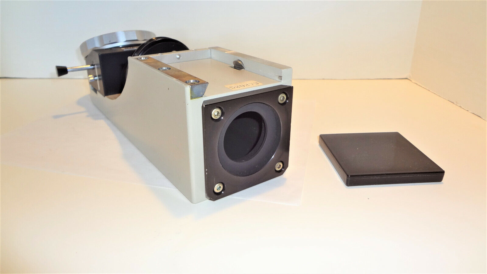 |
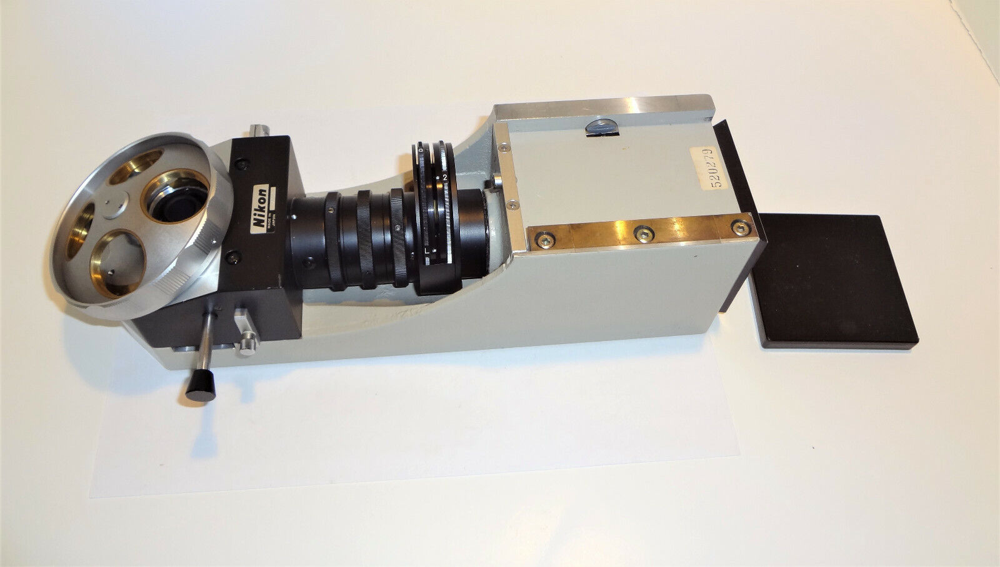 |
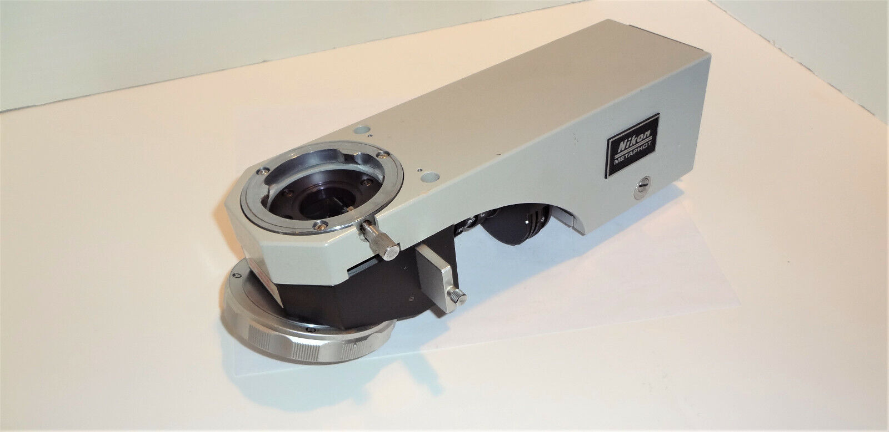 |
received 9 Sept 2022
As suspected, this head is not DIC and barely BD,
using a neutral density stop in the aluminum slider for darkfield.
Knurled knobs on slider ends are merely stops to align darkfield stop or empty (brightfield) hole.
BD thumbwheel, between condenser and field apertures,
appears to be another aperture for stopping coaxial illumination.
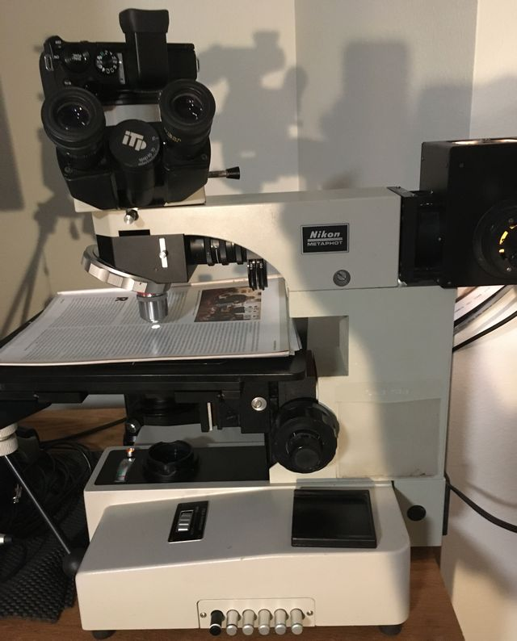